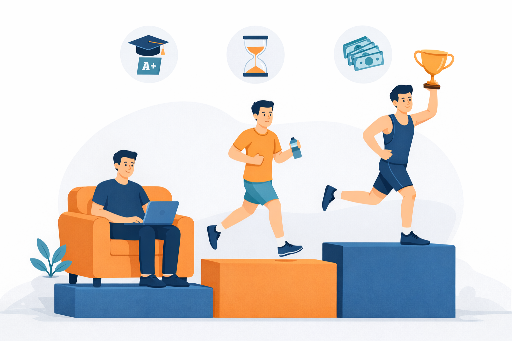

Interested in Research Mentorship?
Learn more about ThesisPathways and apply today.

High schooler interested in structured research mentorship with PhD and MD level mentors from top universities? Click here to learn about ThesisPathways!

Are you a student who is a couch potato when it comes to physical activity? Or do you sometimes exercise recreationally or perhaps you are an elite athlete, all while studying and attending courses?
We found a study by Frick et al. 2026 that looks at that question using data from about 4,700 students across 24 universities and colleges, and compares three groups:
The researchers examine three outcomes:
One of the most consistent findings is that student athletes, especially elite athletes, tend to have at least as good, and in some cases better, academic performance than non-athletes in terms of grades.
This goes against the simple assumption that more hours spent training must necessarily reduce academic performance. Instead, the results show that academic performance and sport participation can coexist, although the study does not fully explain why this pattern appears.
When looking at time required to complete a degree, a more familiar trade-off appears.
So even if academic performance (grades) is comparable or slightly stronger, student athletes tend to progress through university more slowly.
This is consistent with a time allocation perspective: training, competition, travel, and recovery all take time that is not available for academic progression.
The study also examines students’ expected future earnings, both shortly after graduation and several years into their careers.
Across groups, athletes report higher expected salaries than non-athletes, with elite athletes showing the highest expectations.
The paper discusses several possible explanations:
The data itself does not allow the study to determine which explanation is most important.
A key limitation emphasized by the authors is that students are not randomly assigned to be athletes or non-athletes for the study so the results show associations rather than causal effects.
So the findings should not be read as:
“Sports participation improves grades or income expectations.”
but rather as:
“Students who are athletes differ systematically from non-athletes across several academic and expectation-related outcomes.”
Taken as a whole, the patterns are fairly consistent:
Parents and students often wonder: how should students balance time between sports and academics, and what are the trade-offs of doing both seriously?
This study doesn’t directly answer that question, but it does give a useful window into how student athletes actually differ from non-athletes across academics and early career expectations.
Frick, B., Risch, N. & Urgelles, L. Academic performance and salary expectations of couch potatoes, recreational and elite athletes. Ger J Exerc Sport Res (2026). https://doi.org/10.1007/s12662-026-01090-z
Learn more about ThesisPathways and apply today.